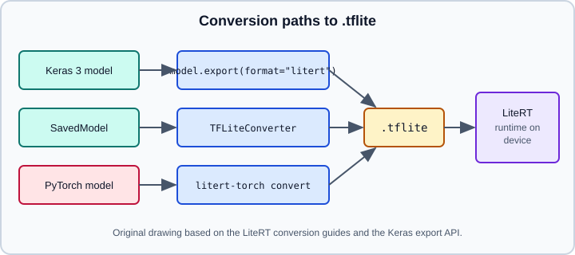

On-Device Inference with LiteRT
|
This content was generated with the assistance of AI and should be verified against the official documentation before being relied on in production. |
LiteRT is the on-device runtime formerly called TensorFlow Lite. It runs a compact .tflite flatbuffer on phones, microcontroller-class boards and embedded Linux with small binaries, low latency and optional GPU or NPU acceleration. This page explains the rename and what it changed, the three ways to produce a .tflite file (Keras 3 export, the TFLiteConverter, and the PyTorch converter), how to run and benchmark a model from Python, and the common conversion errors. Size reduction techniques are on Quantization and Model Optimization; server-side deployment is on Serving with TensorFlow Serving; the browser route is on TF.js, TFX and TF Probability. The framework-neutral discussion of edge deployment is on Deploying and Serving Models, and the PyTorch counterpart is ExecuTorch.
It targets Python 3.13, TensorFlow 2.21 with Keras 3.15 (TensorFlow 2.22 is "upcoming" and not covered), and was checked against the official LiteRT and Keras documentation on 2026-10-30. Examples were run on Python 3.13 with TensorFlow 2.21, Keras 3.15 and ai-edge-litert 2.3.0 (CPU) on 2026-10-31; the SavedModel read by the converter example was produced with model.export("models/my_model/1") from the Keras model above. Android, iOS and accelerator (GPU, NPU) code needs those devices and was not executed, and the litert-torch route was not run.
TensorFlow Lite is now LiteRT
Google announced in September 2024 that TensorFlow Lite is renamed LiteRT, described as the same runtime with a new home and a broader scope (models from TensorFlow, Keras, JAX and PyTorch). The file format did not change: conversion tools still write .tflite files and the runtime still reads them. Documentation moved from tensorflow.org/lite to developers.google.com/edge/litert. Many older books, blog posts and Stack Overflow answers say "TensorFlow Lite" and use tflite-runtime; they are not wrong about the format, but the packages have moved.
| Platform | Older name | Current name according to the migration guide |
|---|---|---|
Android (Maven) |
|
|
Python |
|
|
Play services |
|
No change |
iOS Swift/Objective-C, C++ SDK, Task Library, Model Maker |
TensorFlow Lite packages |
Not migrated, they stay in the TensorFlow Lite packages |
The migration guide says existing TFLite packages keep working, but that future feature updates and performance work will go only to LiteRT. It describes two API generations:
-
LiteRT v1: the classic
InterpreterAPI. Migration is a package-name change (a drop-in replacement). -
LiteRT v2: the
CompiledModelAPI, which adds GPU acceleration, NPU support (Google Tensor, Qualcomm and MediaTek are named), zero-copy input and output buffers and asynchronous execution. On Android, theInterpreterAPI gets GPU acceleration only with the v1 Maven packages; the v2 packages requireCompiledModelfor the GPU.
Source: https://developers.google.com/edge/litert/migration and https://developers.googleblog.com/tensorflow-lite-is-now-litert/
For new native work prefer CompiledModel; for an existing Interpreter app, rename the dependency first and move to CompiledModel when you need the GPU or NPU. The migration guide’s Android example uses version 2.1.0, and the Python package ai-edge-litert was at 2.3.0 on 2026-10-31; pin versions from the release pages instead of copying numbers from a page.

Path 1: Keras 3 model.export with format litert
Keras 3 can write a .tflite file directly. The same call is available on the TensorFlow, JAX and PyTorch backends.
import os
import keras
import numpy as np
model = keras.Sequential([
keras.Input(shape=(28, 28, 1), name="image"),
keras.layers.Conv2D(8, 3, activation="relu"),
keras.layers.GlobalAveragePooling2D(),
keras.layers.Dense(10),
])
# Writes a .tflite file at exactly this path; the parent directory must exist
os.makedirs("exported", exist_ok=True)
model.export("exported/classifier.tflite", format="litert")Details from the Keras API reference:
-
The signature is
Model.export(filepath, format="tf_saved_model", verbose=None, input_signature=None, **kwargs). The supported formats are"tf_saved_model","onnx","openvino","litert"and"torch". -
On the TensorFlow backend the extra keyword arguments are passed to the TFLite converter, for example
optimizations,representative_dataset,experimental_new_quantizer,allow_custom_opsandenable_select_tf_ops. That is how you ask for quantization during export (see Quantization and Model Optimization). -
On the PyTorch backend,
format="litert"needslitert-torchinstalled and accepts itsconvert()options, such asstrict_export,dynamic_shapes,lightweight_conversion,enable_x64,runtime_constant_foldingandquant_config. Dynamic shapes are not supported there: aNonedimension is replaced by1when no static signature is given, which can fail at run time on other shapes. Pass a staticinput_signaturewith the largest shape you will use and pad inputs to it. -
The file is written at exactly the given path (Keras prints
Saved artifact at 'exported/classifier.tflite'.), and the parent directory must already exist: without theos.makedirscall the export fails withFileNotFoundError. -
An explicit signature is the safest route:
model.export(
"exported/classifier.tflite",
format="litert",
input_signature=[keras.InputSpec(shape=(1, 28, 28, 1), dtype="float32")],
)Path 2: the TFLiteConverter
The converter takes a SavedModel directory, a Keras model or concrete functions. The conversion guide recommends the SavedModel route; the converter itself still lives under tf.lite in the TensorFlow package.
import tensorflow as tf
# From a SavedModel directory (recommended)
converter = tf.lite.TFLiteConverter.from_saved_model("models/my_model/1")
tflite_model = converter.convert()
with open("my_model.tflite", "wb") as f:
f.write(tflite_model)
# From a Keras model object
converter = tf.lite.TFLiteConverter.from_keras_model(model)
tflite_model = converter.convert()For a tf.Module or a plain tf.function, convert concrete functions with a fixed input signature:
class Scale(tf.Module):
@tf.function(input_signature=[tf.TensorSpec(shape=[None], dtype=tf.float32)])
def __call__(self, x):
return x * 2.0
m = Scale()
converter = tf.lite.TFLiteConverter.from_concrete_functions(
[m.__call__.get_concrete_function()], m
)
open("scale.tflite", "wb").write(converter.convert())Notes and pitfalls:
-
A command-line tool
tflite_convertexists for basic conversion (--saved_model_dir,--output_file), but the guide recommends the Python API. Its--keras_model_fileoption reads a legacy H5 file, which is another reason to start from a SavedModel or the live Keras object rather than from an old.h5. -
from_keras_modelin older tutorials meant a Keras 2tf.kerasmodel. With Keras 3 prefermodel.exportor a SavedModel exported withmodel.export(..., format="tf_saved_model").tf.lite.TFLiteConverter.from_keras_modelstill accepts a Keras 3 model on TensorFlow 2.21 (the example above converts one), butmodel.exportis the route the Keras documentation describes. -
Unsupported ops produce an error about ops not supported by the native runtime. The guide offers three ways out: enable Select TF ops (the runtime then bundles TensorFlow kernels, which makes the binary larger), request the op upstream, or implement a custom op.
converter.target_spec.supported_ops = [
tf.lite.OpsSet.TFLITE_BUILTINS, # native LiteRT ops
tf.lite.OpsSet.SELECT_TF_OPS, # fall back to TensorFlow kernels
]Keep the model graph small and static where you can. Control flow, dynamic shapes, string ops and ragged tensors are the usual reasons conversion fails or a model falls back to larger kernels; see Ragged and Sparse Tensors for why those types are awkward on devices.
Path 3: PyTorch models with litert-torch
PyTorch models are converted with the litert-torch package, which produces .tflite files for LiteRT. On 2026-10-30 its PyPI page listed version 0.10.0 (released 20 October 2026), requiring Python 3.10 or later. The 2024 rename announcement recommends the earlier ai-edge-torch project for the same job, and neither page explains how the two project names relate, so check the package README before choosing the one to install.
pip install litert-torchThe conversion call itself is documented in the project repository (https://github.com/google-ai-edge/litert-torch); follow the README of the release you install, since it is not reproduced or run here. If the PyTorch model is already in a Keras 3 model on the PyTorch backend, the export(format="litert") path above is the documented bridge. For other mobile routes from PyTorch see ExecuTorch and Exporting to ONNX.
Running a .tflite model from Python
The Python runtime is the ai-edge-litert package. The classic interpreter flow is allocate, set inputs, invoke, read outputs.
import numpy as np
from ai_edge_litert.interpreter import Interpreter
interpreter = Interpreter(model_path="my_model.tflite")
interpreter.allocate_tensors()
inp = interpreter.get_input_details()[0]
out = interpreter.get_output_details()[0]
print(inp["shape"], inp["dtype"], out["shape"])
x = np.random.rand(*inp["shape"]).astype(inp["dtype"])
interpreter.set_tensor(inp["index"], x)
interpreter.invoke()
y = interpreter.get_tensor(out["index"])
print(y.shape)Source: https://developers.google.com/edge/litert/migration (import path) and https://keras.io/api/models/model_saving_apis/export/ (interpreter flow)
-
Older code uses
tf.lite.Interpreteror thetflite_runtimepackage; both are the same flow with a different import. Keras documentation still showstf.lite.Interpreter. -
allocate_tensors()must run again after changing input shapes withresize_tensor_input. -
Quantized models report integer dtypes and
quantizationparameters in the tensor details; scale and cast your inputs accordingly (see the quantization page). -
Always compare outputs with the original Keras model on a few hundred examples before shipping:
np.testing.assert_allclose(keras_out, tflite_out, atol=1e-4)is a reasonable check for float models, and a task metric on a validation set is the right check for quantized ones.
keras_out = model.predict(x, verbose=0)
np.testing.assert_allclose(keras_out, y, rtol=1e-3, atol=1e-4)Delegates, accelerators and metadata
-
Hardware acceleration is chosen through delegates in the v1
InterpreterAPI and through an accelerator option onCompiledModel::Createin v2 (the migration guide nameskLiteRtHwAcceleratorGpuandkLiteRtHwAcceleratorNpufor C++). The rest of the code stays the same. -
Whether a GPU or NPU is used depends on the device and on op coverage; always benchmark on target hardware, because desktop numbers say little about a phone.
-
Metadata (labels, normalization constants) can be attached to a
.tflitefile so generated wrapper code knows how to preprocess inputs; the conversion guide links the metadata writer. -
The Task Library and Model Maker are listed as not migrated; the rename announcement recommends MediaPipe Tasks for new development of the task-style APIs.
Checklist before shipping
-
Export or convert from the final trained model, with a fixed input signature that matches production preprocessing.
-
Keep preprocessing consistent (resize, scaling, tokenizer) on the device; mismatches here cause most "works in Python, wrong on device" bugs.
-
Check size, latency and accuracy on target devices, with and without quantization.
-
Pin the converter (TensorFlow) and runtime (LiteRT) versions, and record them next to the model file.
-
Decide the update story: bundled model, downloaded model or both, and keep a fallback.
References
-
LiteRT overview: https://developers.google.com/edge/litert
-
LiteRT migration guide: https://developers.google.com/edge/litert/migration
-
Convert TensorFlow models: https://developers.google.com/edge/litert/conversion/tensorflow/convert_tf
-
"TensorFlow Lite is now LiteRT": https://developers.googleblog.com/tensorflow-lite-is-now-litert/
-
Keras
Model.export(): https://keras.io/api/models/model_saving_apis/export/ -
ai-edge-literton PyPI: https://pypi.org/project/ai-edge-litert/ -
litert-torchon PyPI: https://pypi.org/project/litert-torch/ and repository https://github.com/google-ai-edge/litert-torch